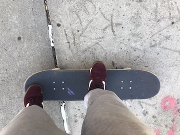

As with all skateboard tricks, foot position is crucial for this trick.
You want your back foot to rest comfortably so that you can get a good pop on
the board. Your front foot MUST be positioned centered and upward enough, such
that your toes are hanging off the board, and your heel is ready to guide your board.
Check out this visual representation of the proper foot positioning, and
follow the link for the next step!
